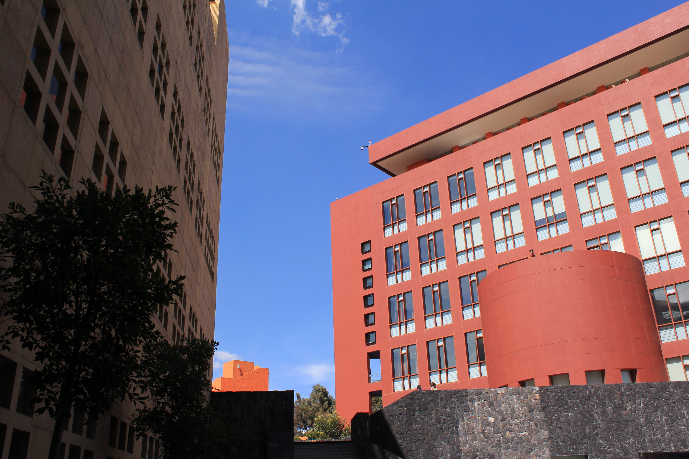
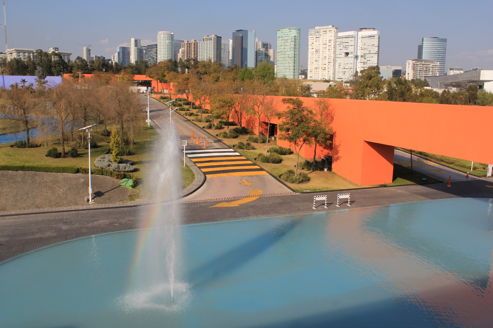

Tecnológico de Monterrey
Campus Santa Fe
Localizado en el distrito de negocios más importante de la Ciudad de México, el Campus Santa Fe del Instituto Tecnológico y de Estudios Superiores de Monterrey será la sede de las rondas preliminares del torneo. Construido en 2001, el campus fue diseñado por Ricardo Legorreta Vilchis, uno de los arquitectos mexicanos más reconocidos a nivel mundial.
Cuenta con una cafetería llamada “La Fuente”, el Centro de Negocios Bloomberg, una cámara de Gessel para estudios de mercado, una biblioteca con más de 53,000 títulos, un auditorio y una variedad de laboratorios (mecánica, tecnologías de la información, física, química y manufactura).
Académicamente, el campus ofrece una escuela preparatoria con tres modalidades: Bicultural, Internacional y el Programa del Bachillerato Internacional; licenciaturas en los departamentos de Ciencias Sociales, Finanzas, e Ingeniería (cada una con su respectiva asociación estudiantil, la cual se encarga de organizar conferencias, seminarios y actividades de esparcimiento para ayudar en la formación del alumnado), así como postgrados en en Administración, Finanzas y Mercadotecnia.
Como universidad, el Tec de Monterrey reconoce que la cultura y el deporte son elementos medulares en el desarrollo del individuo y por lo mismo, el campus tiene una vasta oferta de actividades como música, baile, teatro y literatura entre otras y también cuenta con instalaciones deportivas que incluyen canchas de básquetbol, voleibol, tenis y de fútbol de tamaño completo; una pista de atletismo y un gimnasio.
Todo esto hace del Tec de Monterrey Campus Santa Fe, el escenario ideal para las rondas preliminares del WUDC México 2018.
¡Los esperamos!
Dirección:
Av. Carlos Lazo No. 100
Santa Fe, C.P. 01389
Del. Álvaro Obregón
Ciudad de México


- 

- 